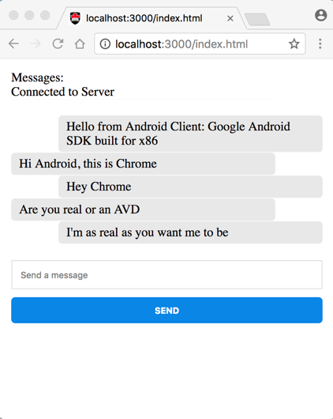
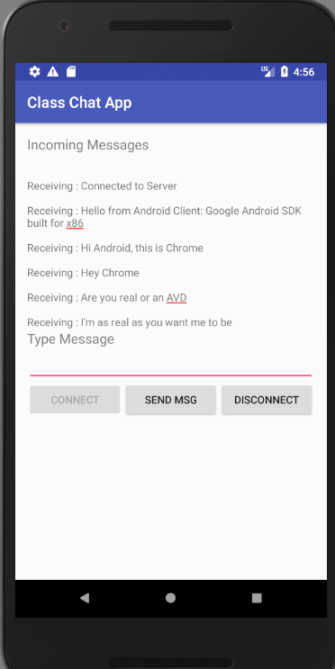

REV: Just a reminder if you are using the Starscream library installed with cocoapods you should open the .xcworkspace file not the .xcodeproj file when opening the project in Xcode.
REV: IMPORTANT: the node.js server must be on based on the ws websocket library and NOT one based on the socket.io library to work with the Starscream iOS library. The demo code provided with the assignment contains a ws websocket-based server (the same one we used with Android).
This is the last 2601 assignment. This is meant as an assignment that will require some reading and research on your part (perfect for work-at-home). We want you to build a Websocket-based chat client that can interact with our node.js chat server we used in the Android section of that course. Specifically you need to do some research on how to use websockets with ios and swift. We will supply a server for you can run on your own machine as localhost (its the same one we used for Android) and also start an openstack server that you can reach through a Carleton IP address.
You will need to do some research on using websockets with ios. The following are the main resources that students found last year. This would be a good place to start.
https://www.raywenderlich.com/143874/websockets-ios-starscream
https://github.com/daltoniam/Starscream
http://leaks.wanari.com/2017/03/22/websocket-ios/
https://www.varvet.com/blog/using-websockets-in-native-ios-and-android-apps/
Please let me know what other, or newer, resources you come across that might be helpful and I can post those.
This assignment is based on 10 specific design requirements numbered R1.1... R1.10. Two marks each for a total of 20 marks.
Marking is based on requirements as follows:
| Req Type | Marking |
|---|---|
| R0.x | Assignment gets 0 if any critical submission (red) |
| R0.x | You lose 2 marks for each good practice (orange) |
| R0.x | You earn 2 marks for each design requirement (green) satisfied and well implemented; 1 mark if it's partly met or met but not well implemented; and 0 if it's not met. |
The following submission and good practice requirements will pertain to all your assignments regardless of what your application is supposed to do. These requirements are to ensure that your code is readable, robust and follows good software engineering practrices.
R0.0) IMPORTANT Uniqueness Requirement: The solution and code you submit MUST be unique. That is, it cannot be a copy of, or be too similar to, someone else's code, or other code found elsewhere. A mark of 0 will be assigned to any assignment that is judged by the instructors or the TA's not to be unique. (You are free, however, to use any code posted on our course web site in your assignments including tutorial demo code or answer code.)
R0.1) CODE ORGANIZATION, SUBMISSION AND COMPILATION: Your code should be submitted to culearn as an Android Studio 3.x.x project with API level 28 and min API level 24 similar to that of the demo code supplied for the class exercises. IMPORTANT: You should do a Build->Clean Project before you submit the code. This will significantly reduce the size and provide us with a starting place for a clean compile. Zip up the files using .zip format (not other compression formats.) The markers must be able to compile your code using the Android Studio 3.x.x. Your code should run on either an android virtual device (AVD, API level 28) or a real device but need not be tested on both. You MUST provide a readme.txt file explaining which device you tested your code on and any special instructions you want the TA to know before they start marking.
1) The marker will open your project in android studio. (If you compress your code then provide a .zip file only (we will not support .rar, .tar, ... etc.) Only .zip files.
2) The marker will then Build->Rebuild Project to rebuild (compile) your project and look at your source files, your readme.txt files and run your code. If the code compiles they will test it on a device or AVD.
3) Once your code launches it will be evaluated against the assignment requirements.
Be aware no partial marks will be awarded to assignments that don't compile and run. Assignments are intentionally broken down into many small design requirements. It is better to have running code that satisfies some of them than to have code that won't compile and run but claims to address more requirements.
The following good practice requirements will be in effect for all assignments.
R0.2) Variable and Function names: All of your variables, methods and classes, XML tags etc, should have meaningful names that reflect their purpose. Don't follow the convention common in math courses where they say: "let x be the number of customers and let y be the number of products...". Instead call your variables numberOfCustomers or numberOfProducts. Your program should not have any variables called "x" unless there is a good reason for them to be called "x". (It's OK to call simple for-loop counters i,j and k etc. when the context is clear and very localized.)
R0.3) Encapsulation: All variables in your object-oriented classes should be private unless a specific design requirements asks for them to be public (which is unlikely). It is good programming practice to design objects that provide services through public methods. How they store their data is their own private business. Note having public static constants or enums defined is of course ok and, in fact, encouraged.
R0.4) Robustness: Your program should never crash when is is being run for marking. Make sure you have no null pointer exceptions or attempt to access an array or data structure out of bounds. (We get especially annoyed by out of bounds errors since they still seem to be the number one bug in programming and have been for a long long time!) Android, iOS specific: Your code should not crash as a result of the user rotating their device between landscape and portrait orientation.
R0.5) Code Comment: Comments in your code must coincide with what the code actually does. It is a very common bug to modify or cut-and-paste code and forget to modify the comments and end up with comments that say one thing and code that actually does another. Don't over-comment your code; instead choose good variable, constant, tag names, and method names that make the code "self commenting".
R0.6) Hard Coded Constants: Your code should not have hard coded constants used in places like if-statements or function parameters. Your constants should have meaningful names. Don't have if statements like if(ball.getLocationX() + 40 < 100) ...; instead your code should look more like if(ball.getLocationX() + ballRadius < rightBoundaryX) ...; If necessary create local variables that reflect the use of the constant. e.g. double rightBoundaryX = 100; then you can refer to that in your program logic. (There is no prize for having fewer lines of code -if more lines makes your code more readable then use more lines).
R0.7) Nested Expressions: Don't use nested expressions that return results but obscure what the result or computation means. For example don't use expressions like:
totalView.setText(Double.parseDouble(view2.getText()) * (1 + Double.parseDouble(view3.getText())));
Instead do:
double price = Double.parseDouble(priceView.getText();
double tipPercentage = Double.parseDouble(tipPercentageView.getText();
//1...100
double totalPrice = price * (1+tipPercentage/100);
totalView.setText(totalPrice);
That is, use temporary variables whose names effectively comment the code.
R0.8) String constants: Strings that appear in the user interface labels should be represented as XML string resources. So if you wanted to change the string that appears on the UI for a label say, you would only need to change the XML file. Constants used in your code should be defined and scoped appropriately (e.g. as final static values in java).
VERY IMPORTANT: Any demo code or sample code fragments provided may have bugs (although none are put there intentionally). It is part of your task to identify errors in the code and in the requirements. Please report them so they can be fixed and discussed in class.
In the android section of the course we demonstrated an Android websocket client that looked like the following and was used to chat with the websocket-based chat server.
 
Here we want you to build an iOS version of the client with similar functionality, though the appearance need not be the same. Here are the specific requirements you should ahere to.
R1.1 The ios client should be based on Websockets.
R1.2 The client should have a text field where there user can type in the IP and port of the chat server (eg. localhost:3000 or 134.117.26.92:3001) and a "connect" button or menu item to be used to connect to the server. That is we don't want the server URL hard-coded in the code but instead let the user enter it or choose from a limited number of options. This would allow easy testing either on a localhost hosted server or on own we are running at a real IP address (like on an openstack image).
Our live server will be running at 134.117.26.92:3001. You can access its browser based client at http://134.117.26.92:3001/index.html. This IP address does not require you be VPN'ed into Carleton.
R1.3 We should be able to use the application from an IOS simulator and access the chat server running on the same host computer. (If the app user needs to enter the server URL please provide that in the readme.txt with the assignment and ideally use it as a hint in the text field where they are supposed to enter it. We should also be able to connect to a server not hosted on the local machine.
R1.4 There should be a disconnect button or menu item to disconnect the client from the server.
R1.5 The app should indicate when a successful connection has been made to the server.
R1.6 Once a connection is established the client user should be able to chat with other clients through the server as was done with the android version. That is type a message in a text field and the press a send button.
R1.7 It should not be necessary to modify the node.js based chat server to accommodate your client. It is already built and it already serves browsers and the android clients.
R1.8 The client application should be an Xcode 11.x.x. application using Swift 5.x (that is, use the current Xcode/Swift).
R1.9 You should include a readme.txt file and it should include the online resources or books you used in doing this assignment. That is, we want to know what resources your came accross that were most useful for learning websockets with iOS. We've provided some suggestions but those are from last year and there might be newer, better, ones.
R1.10 Enhancement. Make some enhancement above and beyond the basic requirements that you think makes the app better. Say what it is in the readme.txt and explain, if necessary, how to use it.
Here is a video showing one possible interpretation of the assignment.